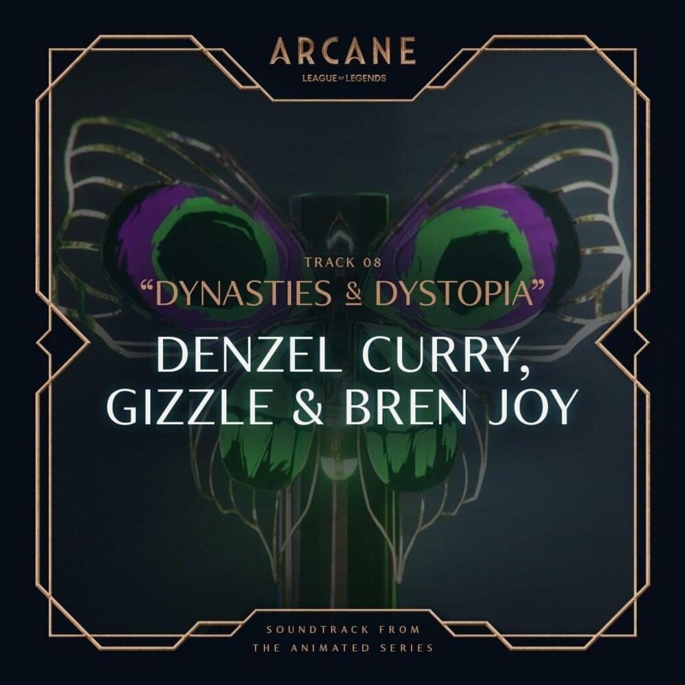

Dynasties & Dystopia
Denzel Curry, Gizzle, Bren Joy
Ooh, yeah, he mad
I'm racking up white diamonds
Throw me in the sky
You would swear the sun shining
Ooh, yeah, he mad
I'm racking up white diamonds
Throw me in the sky
You would swear the sun shining
In this gothic underground city, we all sin
If I bring a couple rounds with me then we all win
I came back and brought the crown with me, the king's den
Break your Nexus and your neck 'cause
Everybody's on your head
I might, just might kick your butt
Go run amok then paint my nails
Never learned to raise my hand
Was too busy raising hell
Everything I know I am
You should go and save yourself
Thought you had my number, huh?
Congratulations you played yourself
Underground utopia dynasties and dystopia
Fear is never an option so dying's not a real phobia
I'm beating the odds
Rising to every occasion as if I defeated the gods
Switch up the mod
Nothing but champions comin' up rolled in one little squad
Hold still while I bag that, uh
Talk bad 'til I snap back, uh
This ain't brown this that dark black
This that pitch black, jet black
Snap yo' ex watch me give him flashbacks
Pressure's rising fast as lighting they can't stop it now
If you ain't talking realness then just change the topic now
They laughing at the top like they can't see the bottom
And they thought I needed help but I got here without them
I am sharper than a pack of hundred razor blades
When the smoke clears, outta her, bet they name gon' fade
I'ma be here doing it, doing it my way
They said I should I change it up
But what did I say?
Ooh, yeah, he mad
I'm racking up white diamonds
Throw me in the sky
You would swear the sun shining
Ooh, yeah, he mad
I'm racking up white diamonds
Throw me in the sky
You would swear the sun shining
Hold still while I bag that, uh
Talk bad 'til I snap back, uh
This ain't brown this that dark black
This that pitch black, jet black
Snap yo' ex watch me give him flashbacks
I get that magic all on me, I feel like I'm Tracy McGrady
Enemies circled around me three-sixty, T count 'em one-eighty
I've been in court with the spirit beside me since I was a baby
Just getting chaotic y'all made me a product for
causing the chaos right here where they raised me
In this gothic underground city, we all sin
If I bring a couple rounds with me then we all win
I came back and brought the crown with me, the king's den
Break your Nexus and your neck 'cause
Everybody's on your head
Ooh, yeah, he mad
I'm racking up white diamonds
Throw me in the sky
You would swear the sun shining
Ooh, yeah, he mad
I'm racking up white diamonds
Throw me in the sky
You would swear the sun shining
Dynasties and dystopia, dynasties and dystopia
Dynasties and dystopia, dynasties and dystopia
Dynasties and dystopia, dynasties and dystopia
Dynasties and dystopia, dynasties and dystopia